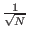
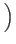
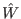

Next: An Illustration of Grover's
Up: Quantum Computing and Grover's
Previous: Performing Computations
Contents
Assume you have a system with N = 2n states labeled
S1, S2,...SN. These 2n states are represented by n bit
strings. Assume there is a unique marked element Sm that
satisfies a condition
C(Sm) = 1, and for all other states C(S) = 0. We assume that C can be evaluated in unit time. Our task is to
devise an algorithm which minimizes the number of evaluations of C.
The idea of Grover's algorithm is to place our register in a equal
superposition of all states, and then selectively invert the phase of
the marked state, and then perform an inversion about average
operation a number of times. The selective inversion of the marked
state follows by the inversion about average steps have the effect of
increasing the amplitude of the marked state by
O(1/ ).
Therefore after
O() operations the probability of measuring
the marked state approaches 1. [Grover96]
).
Therefore after
O() operations the probability of measuring
the marked state approaches 1. [Grover96]
Grover's algorithm is as follows:
- Prepare a quantum register to be normalized and uniquely in the first
state. Then place the register in an equal superposition of all
states
,... by applying the Walsh-Hadamard operator . This means simply the state vector will be in an equal superposition of each state.
- Repeat
O() times the following two steps (the precise number
of iterations is important, and discussed below):
- Let the system be in any state S. If C(S) = 1, rotate the phase
by
 radians, else leave system unaltered. It is worth noting
that this operation has no classical analog. We do not observe the
state of the quantum register, doing so would collapse the
superposition. The selective phase rotation gate would be a quantum
mechanical operator which would rotate only the amplitude proportional
to the marked state within the superposition.
radians, else leave system unaltered. It is worth noting
that this operation has no classical analog. We do not observe the
state of the quantum register, doing so would collapse the
superposition. The selective phase rotation gate would be a quantum
mechanical operator which would rotate only the amplitude proportional
to the marked state within the superposition.
- Apply the inversion about average operator
 , whose matrix
representation is:
Aij = 2/N if
i
, whose matrix
representation is:
Aij = 2/N if
i  j and
Aii = - 1 + 2/N to the quantum register.
j and
Aii = - 1 + 2/N to the quantum register.
- Measure the quantum register. The measurement will yield the n bit
label of the marked state
C(SM) = 1 with probability at least
1/2.
[Grover96]
Subsections
Next: An Illustration of Grover's
Up: Quantum Computing and Grover's
Previous: Performing Computations
Contents
Matthew Hayward - Quantum Computing and Grover's Algorithm GitHub Repository